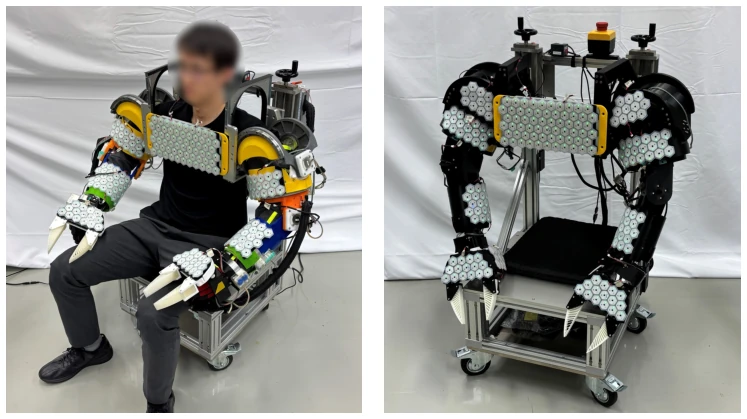
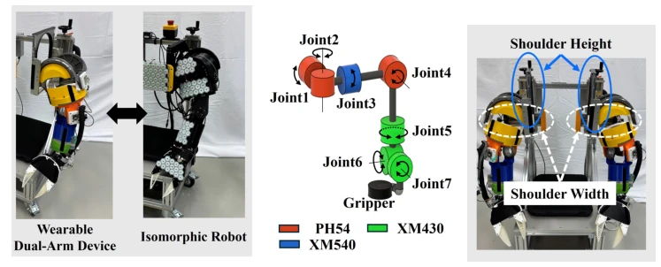
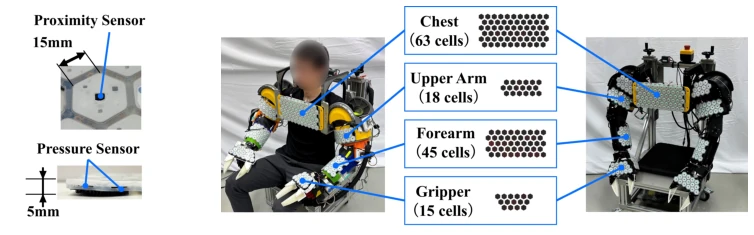
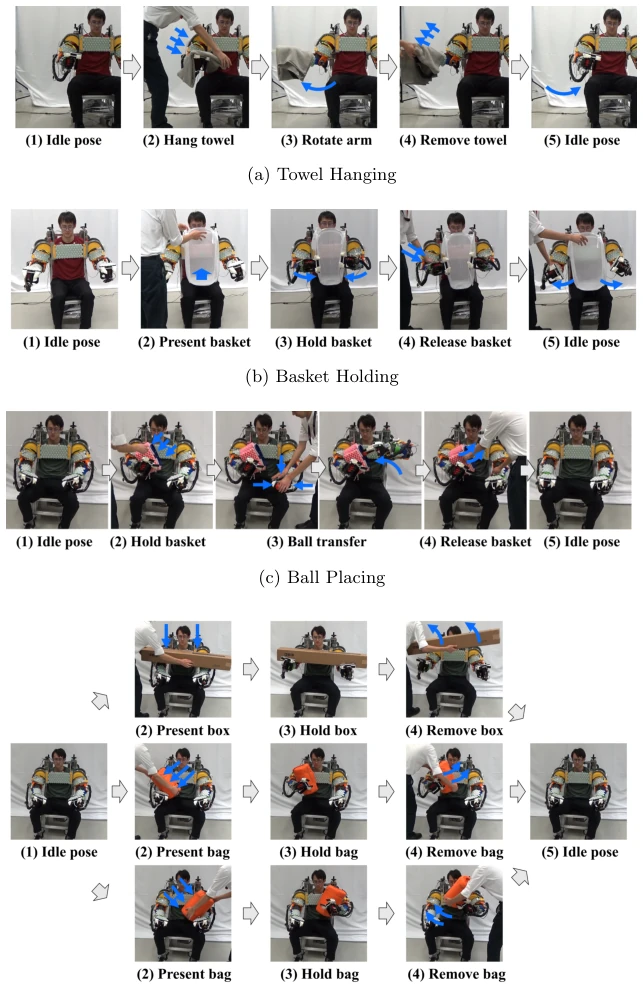
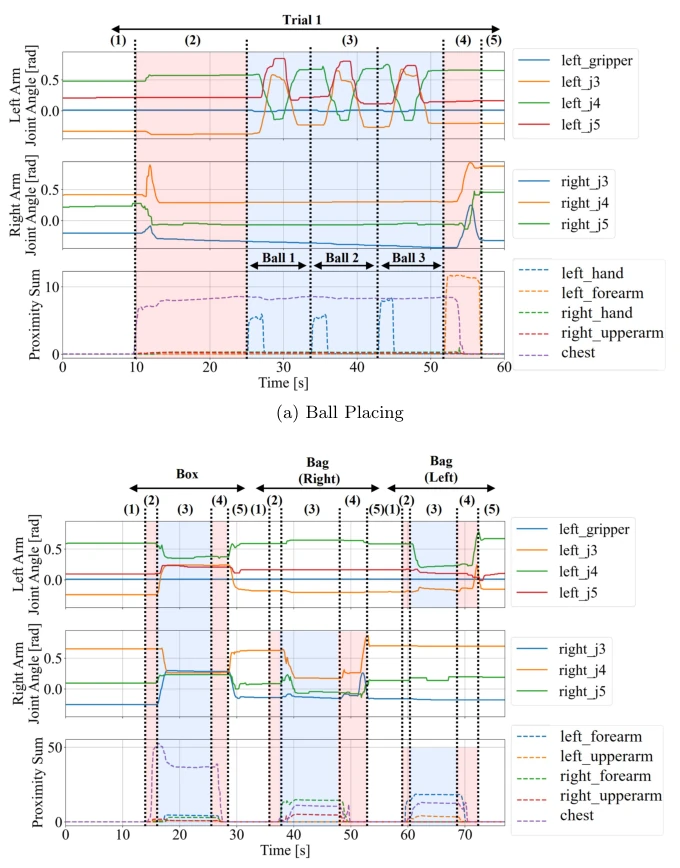
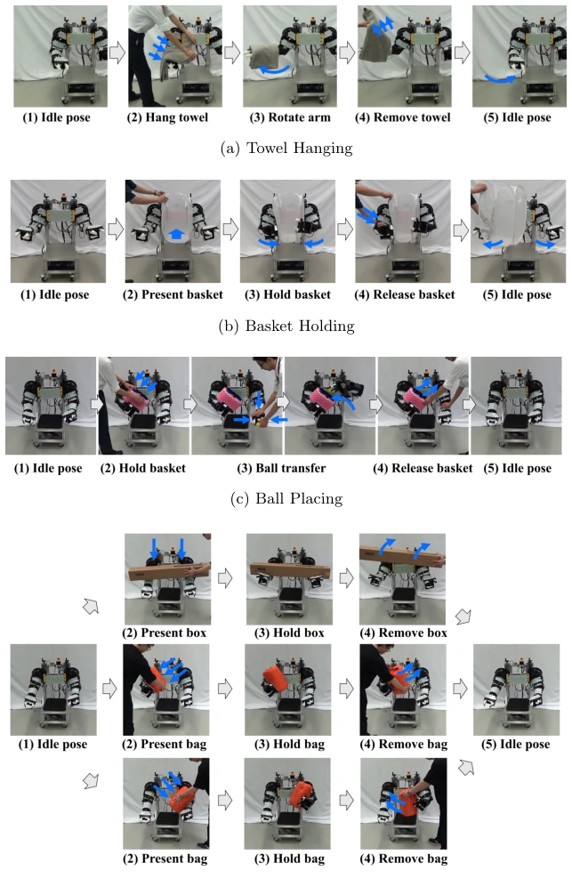
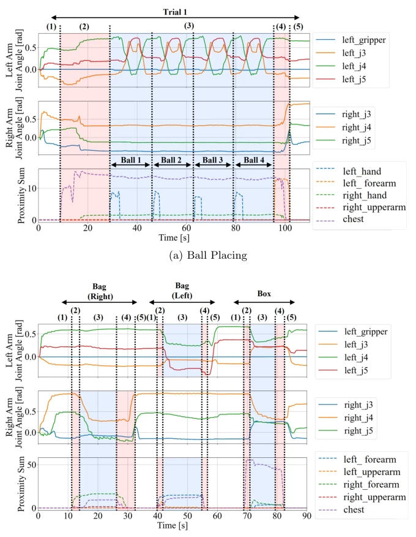
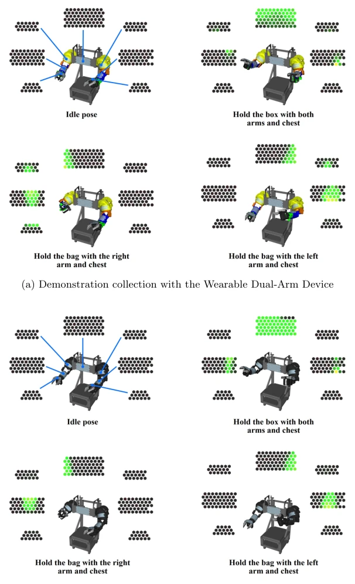

This paper proposes a "twin" robot system, one for human wear and one for actual operation. The core pain point is accurately identified: current robots learn tasks relying solely on the end-effector, what counts as body (chest/arms) brushing against objects? Vision is inaccurate, and there is no place to install tactile sensors. TWINS utilizes a wearable device set plus a real robot of identical dimensions to quantify "body contact". The advantages are clear: morphological consistency saves the hassle of kinematic mapping, and tactile data can be directly transferred. However, there are significant drawbacks: the hardware threshold is high, involving 3D printing and servo motors, not accessible to everyone. Moreover, latency ranges from 0.4-0.6 seconds, causing the real robot execution to be slightly "lagging". Although Diffusion Policy is employed, it is essentially imitation learning, and generalization depends on data volume. Although the hardware is open-sourced, the cost of 3D printed parts and servo motors is not low, and ordinary laboratories may not easily replicate it. Overall, it is a solid hardware + data pipeline work, but do not expect it to directly become a general VLA; it is a "teaching tool" customized for specific contact tasks.
Robot imitation learning is becoming increasingly popular, but data quality determines the upper limit. The current pain point is that most systems focus solely on the end-effector, ignoring the "body-surface contact" unique to humanoid robots. For instance, when hugging a large box, hands alone cannot hold it; one must use arms and chest to brace against it. Vision alone provides inaccurate estimates, and the lack of tactile observation limits the skill scope. Existing solutions each have shortcomings: Motion Capture combined with a tactile suit (ActionSense [10]) fails to resolve the morphological differences between humans and robots; VR teleoperation (OmniH2O [11]) lacks physical interaction capabilities; Leader-Follower approaches (ALOHA [9], CHILD [12]) offer limited feedback, preventing operators from experiencing body contact; Wearable end-effectors (UMI [13]) and exoskeletons (HumanoidExo [8]) either only cover the hands or focus solely on motion. TWINS aims to solve how to simultaneously achieve "embodied operation", "morphological correspondence", and "body-surface contact perception", enabling operators to wear a "robot shell" to directly collect body contact data with tactile feedback, thereby reducing structural discrepancies between demonstration and execution.

Fig. 1 TWINS: A tactile wearable isomorphic arm networked system.
The overall workflow is divided into three steps: data collection, policy training, and policy execution. In terms of hardware, TWINS comprises a Wearable Dual-Arm Device and an Isomorphic Robot, with both having completely consistent joint configurations and external dimensions, eliminating the need for kinematic retargeting. The wearable device shell encases the operator's arms, collecting contact information (pressure + distance) from the arms and chest via e-Skin tactile sensors (Intouch Robotics) at a data rate of 10Hz. Each joint is equipped with a 10-bit encoder; the robot utilizes DYNAMIXEL series servo motors, employing high-torque motors for proximal joints and lightweight ones for distal joints. The state is defined as joint angles q(t) and tactile S(t), with demonstration data D directly recorded as a time series. During execution, robot joint angles directly reproduce qW(t) without conversion. Policy training employs Diffusion Policy, where the input consists of 16-dimensional joint angles plus 438-dimensional tactile data (219 sensor units), and the output is the joint angles for the next time step. Tactile data is normalized to [-1, 1]; normalizing all sensor units uniformly is more stable than per-unit normalization. This design allows the tactile distribution (contact region) and pressure distribution to be directly transferred, recording not only the presence of contact but also the contact range. The system open-sources its hardware design for ease of replication.

Fig. 2 Mechanical design of TWINS. TWINS consists of a Wearable Dual-Arm Device and an Isomorphic Robot that share the same joint con- figuration and body dimensions. The Wearable Dual-Arm Device includes manual adjustment mechanisms for shoulder width and shoulder height to accommodate operators of different body sizes.

Fig. 3 Tactile sensing system. (a) Each hexagonal e-Skin cell measures both pressure and proximity. (b) Tactile sensors are mounted on the chest, front of the upper arm, inner forearm, and top surface of the gripper on the Wearable Dual-Arm Device and the Isomorphic Robot to capture body-surface contact during manipulation tasks.
Validation was conducted on four tasks involving body contact: hanging a towel, holding a basket, placing a ball, and adaptive holding. Each task had 10 demonstrations, totaling 40. Diffusion Policy was used to train the policy. Qualitative results indicate that the robot can switch operation stages based on body contact events (e.g., whether the towel is placed on the left or right arm), successfully reproducing demonstration behaviors. Tactile sensor activation patterns remained consistent between demonstration and execution, demonstrating the importance of morphological correspondence. Despite the 0.4-0.6 second tracking latency, the policy could still handle unseen scenarios (e.g., inverted towel order). The mean absolute error was 0.94 degrees, and the 95th percentile error was 3.43 degrees. The primary failure case was dropping the object when holding it with one hand, which improved after adding sponge pads. The experiments demonstrate that the system can collect and effectively utilize data involving body contact, although hardware latency and stability still have room for optimization.

Fig. 4 Contact-rich demonstration collection using the Wearable Dual-Arm Device.

Fig. 5 Joint-angle and tactile-sensor data collected with the Wearable Dual-Arm Device. The numbers above the plots correspond to the manipulation phases in Figure 4. Only representative joint angles and tactile sensor patches are shown for clarity. For each tactile sensor patch, the plotted value is the summed proximity measurement over all sensor cells.

Fig. 6 Policy rollouts using the Isomorphic Robot. Each image corresponds to the same manipulation phase as in Figure 4.

Fig. 7 Joint-angle and tactile-sensor data measured during policy rollouts with the Isomorphic Robot. The numbers above the plots correspond to the manipulation phases in Figure 6. For clarity, only the same joint angles and tactile sensor patches as those in Figure 5 are shown. For each tactile sensor patch, the plotted value is the summed proximity measurement over all sensor cells. Compared with the demonstrations shown in Figure 5, the number of ball presentations in the Ball Placing task and the presentation order of the objects in the Adaptive Holding task are different. Nevertheless, the learned policies generate appropriate behaviors in response to body-surface contact events.

Fig. 8 Visualization of tactile sensor measurements during the Adaptive Holding task. Green indi- cates cells with an active proximity response, whereas yellow indicates cells with both active proximity and tactile responses.